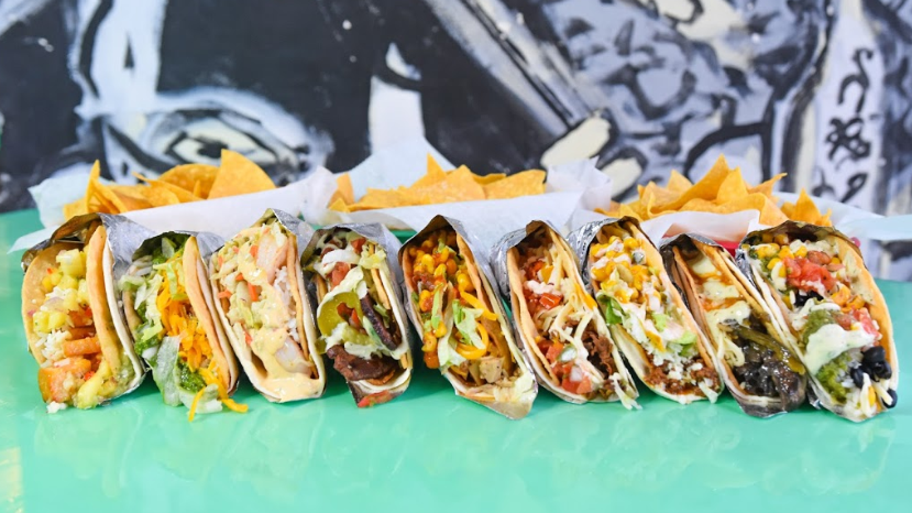

Today I went to the library with my girlfriend, Breann. It was nice being able to get out of my room since I've had to study there due to MSU closing the library until recently. She also brought her Leader Dog named Xoey, which she's training to be a seeing-eye dog for people who have a visual impairment. While I was at the library, I worked on this website, and I also listened to my lecture for my mobile application development class, CSE 476. I also dropped off my Spartan Spit kit since it was due today, and I drank an Arnold Palmer while I was there. I was able to create both pages for my blog, and I also wrote a decent chunk of content for my main page. The most important thing I did there through was optimize my fantasy football player and put a new wide receiver on my roster. When I left the library, the weather was amazing though other than it being a little too windy. It was great to feel the sun on my face though after having a few dreary weeks with a lot of rain and wind. I made sure to take the long way back due to the nice weather though.
Tacos!!!
Alex Brandt

Today I went to Barrio in East Lansing with my friends Ben, Jessica, Matt, Ryan, and Jackson. It was a great time even though our waiter didn't do a very good job. He had to ask us for orders three separate times since he didn't use a notepad to write anything down. We first ordered chips and salsa as well as guacamole. Their salsa and their guacamole are both very good, but for some reason we got half of an avocado that hadn't been mashed in our bowl of guacamole. The tacos we ordered were fantastic though. I ordered three custom tacos with chicken, salsa, onions, lettuce, and cheese. Even though I felt like I personally ate an entire bowl of chips myself, I ate three of the tacos, and I felt like I could've eaten at least two more since I hadn't eaten that much that day. We also got to see our friend Tyler who works there, and he even helped our waiter serve our food. I think that the next time I go there I'm going to try some of their specialty tacos. One of them comes with steak that was marinated in Coca-Cola which I thought was interesting to see, but apparently it's pretty good!